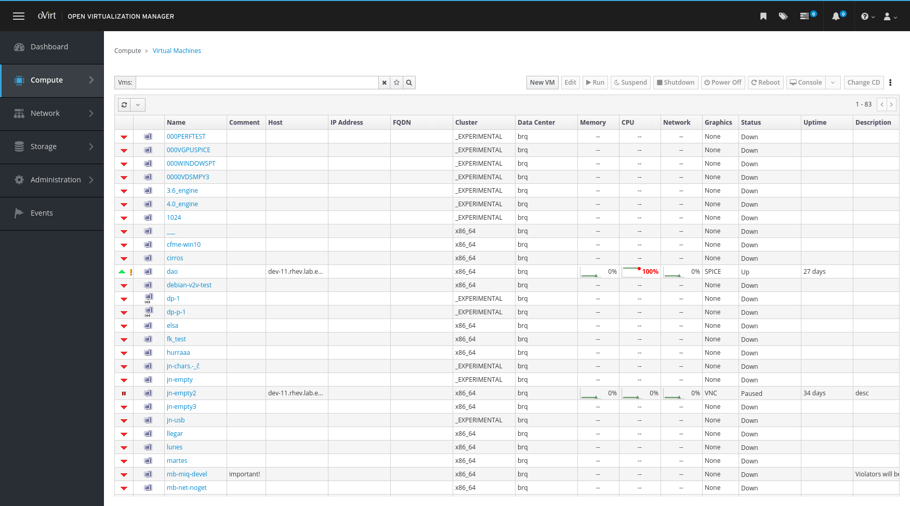
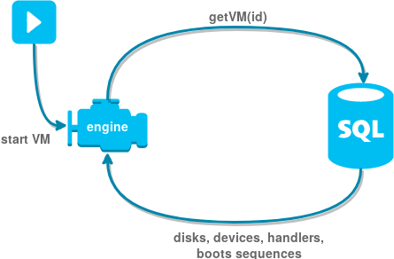
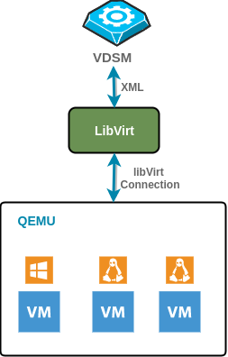

Starting up a virtual machine (VM) is not an easy task, there are lot of things going on hidden from the plain sight and studying it alone is a challenging task. The goal of this post is to simplify the process of learning how the oVirt hypervisor works. The concept of the oVirt is illustrated on the process of starting up the VM, which covers everything from top to the bottom.
Disclaimer: I am an engineer working close to the host part of the oVirt, therefore my knowledge of the engine is limited.

Let me start with explaining the main parts oVirt hypervisor architecture. It will help a lot in understanding the overall process of the VM start up flow. Following is the simplified architecture, where I omit auxiliary components and support scripts. This will allow me to focus on the core concept without distractions.
The architecture comprises of three main components: 1) web UI and engine, 2) VDSM, 3) guest agent.
The web UI is where the user makes first contact with the oVirt hypervisor. The web UI is the main command center of the engine and allows user to control all aspects and states of the VMs.
The engine is the hypervisor brain that manages all VMs and all hosts. It also orchestrates the migration of VMs and control that highly available VMs are really highly available.
Of course, for the engine to be able to execute commands it needs a worker running on each host. In the oVirt this worker is named the VDSM and handles all the tasks linked with direct manipulation of the VMs and a preparation of host.
Last but not least, for the engine to know the health status of the running VMs it also needs the daemon running in each VM. This daemon is called the oVirt guest agent and thanks to its service the engine knows important information about each VM. This information is: VM IP, list of installed software, health, installed OS and up time.
The engine is the brain of the oVirt hypervisor, but what does it means, right? The engine does all the hard work of managing the VM. It knows the states, setups and current capacity of all hosts as well as the running states of all VMs. Therefore it can do the scheduling for the deployment of highly available VMs or decide on which host the VM will be started according to host capacity.
At this point, it is good time to tell you, that the engine is composed of three parts: 1) the web UI, 2) the Java backend and 3) the postgresql database. The web UI server as main command center for the whole oVirt and it is the entry point from where you start your VM. By pressing “VM run” button.

Once the user presses the button, the Java backend starts to build the VM configuration. The process begins by accessing the Postgresql database. If the VM already exists, the list of its devices, storage drives, current state (new, paused, hibernated) and guest agent version is retrieved. From the retrieved data, the backend build the VM configuration.
From the built configuration, the VDSM command for running the VM is created, which is sent to the host running VDSM via JSON RPC. The run command contains information about machine start-up, the guest agent version, devices setup and if the machine should start paused (used for accessing the boot manager). Once the command is built, it is sent to the VDSM for execution.

Now, when the VDSM receives the command, it starts the work on running the VM. As you can see from the picture, before any VM can be run in the QEMU, the VDSM needs to go through libVirt as its middle man. Furthermore, the VDSM needs to handle states of the VMs running on its host. While it might not seem like a big deal, things can get complicated really fast.
I will start with the high level overview. As I have already mentioned, the virtualization platform for the oVirt is the QEMU set up on KVM. Communication with QEMU is actually pretty complicated and it covers a lot of work related to handling networks and hardware devices. Good project does not reinvent the wheel where the wheel is already available, therefore VDSM manages QEMU through adapter called the libVirt. LibVirt nicely implements all the low level routines needed to operate QEMU, and allows VDSM to use high level commands like “create domain”, which creates Virtual Machine, obviously. Besides communication with libVirt, the VDSM has a small registry with all VMs running on its host, where it store current state and operation. VDSM also, communicates with the quest agent running inside the VM and passes the communication to the engine. Beside that it does quite a few other things, which I will cover in some next post.
So now we know what is the main purpose of the VDSM, but how it is all implemented and how it will lunch my VM?
Well first the VDSM need to create connection to the libVirt and start listening for its events. This is done in separate thread, so it is non blocking and allows to pass control to the rest of application. The connection goes both ways, it can pass the commands to the libVirt and it actively listens for events on libVirt and allows for reaction.
To listen to the oVirt engine, the VDSM has to create a RPC server, to which the engine sends its commands. The code doing exactly this resides in the clientIF, which is the VDSM interface class providing the API. The client runs in a separate thread, which is started by start() method.
Which method it is to start the VM, you ask? It is the createVM method called through the API create, but there is more to it. Let me walk you through the whole process, it is actually quite interesting how much work is needed to run one VM.
The whole action start with checking if VM already exists, we do not want multiple identical VMs running. Next is time for checking whether VM was hibernated; if so, load stored machine and update its parameters accordingly. Following is parameter validation. This checks required options and fails if they are not present. Next parameter fix is in place, this simply fills missing optional parameters by defaults. Fix is followed by check for supported graphics display. After these checks, the clientIF method createVM is called.
CreateVM is actually quite simple method, it creates new VM, adds it to the dictionary and runs it. The VM class is where most of the magic happens. VM run method executes in a separate thread, thus it is non-blocking and can pass control to other thread while doing I/O.
The run starts with creating VM devices (network, graphics, etc.) and if the VM is not recovering setting them up. Following there are four options for starting the VM, depending on the previous state of the VM.
It is worth noting that, the libVirt connection accepts the libVirt XML format as its VM configuration, which was translated from engine configuration to the XML format in createVM phase.
Finally once the libVirt has the XML, it handles the rest and notify back on any change.